Em uma frase: PRONTO PARA CONFERIR, com ressalvas. Os dois consertos fazem o que prometem, conferido na janela de verdade: cancelar depois de "substituir o antigo" não apaga mais o PDF antigo (nem com "Montar cadernos"), e a pintura marcada com "só neste pedaço: Original" sai como o original numa página em Preto e branco, enquanto as outras páginas saem iguais ao 044a7c1, ponto por ponto. As ressalvas: quando o PDF antigo está aberto noutro programa, o PDF novo é salvo como "(2)", mas a tela trata isso como erro (sem "Ficou pronto!"; o cartão não fica "PDF gerado"). A faixa creme em volta da pintura aparece de verdade. E a página com o pedaço deixa o PDF bem maior (3,0 → 5,4 MB por uma página).
Ramo consertos-cancelar-pedaco-2026-10-05 (commits 880bf70, 60d8c58, d995208, base 044a7c1), worktree consertos2. Não mexi em nenhum código.
Defeito conhecido (aviso obrigatório até a Fase 1 ficar pronta): moldura dourada e iluminura continuam sendo defeito conhecido (itens 1.4 e 1.5). Estes consertos não mexem nisso.
pytest inteiro na worktree, teste_botoes.py, e comparação ponto a ponto das páginas dos PDFs gerados (janela × 044a7c1 × sem pedaço).LOCALAPPDATA e a pasta do usuário trocadas), nunca a do Samuel. Os scripts do piloto vieram do parecer anterior (verif-consertos-saida, só lidos).livro-teste.pdf, com 10 folhas copiadas das páginas-gabarito (Escola de Jesus 7, Boécio 3/7/8/22, Escola 35, Palatino 5/7/9/10). "Dividir folhas ao meio" desligado, filtro Preto e branco. Para "Montar cadernos", um segundo livro: livro-cadernos2.pdf, com as 9 primeiras folhas.PermissionError 5). Não usei o leitor de PDF do Samuel.| O quê | Resultado |
|---|---|
pytest tests -q na worktree |
1410 passaram, 8 pularam, 0 falhas (6 min 48 s, PC com outros agentes) |
Os 3 arquivos de teste destes consertos (test_substituir_e_cancelar, test_so_neste_pedaco_no_preto_e_branco, test_filtro_com_selecao) com -rs |
51 passaram, nenhum pulou (o teste com o PDF aberto de verdade no Windows rodou) |
teste_botoes.py |
132 ações, 0 falhas |
Páginas 2 a 10 do PDF gerado na janela (com pedaço só na página 1) × o mesmo projeto processado pelo 044a7c1 |
9 de 9 idênticas, ponto a ponto (e iguais ao PDF gerado antes de marcar o pedaço) |
| Página 1, dentro do pedaço × a página em Original | 100% dos pontos iguais (diferença máxima 0) |
Página 1, fora do pedaço × 044a7c1 |
0 pontos diferentes (de 4 007 462) |
| PDF da janela × o mesmo projeto processado sem janela, pelo código da worktree | 10 de 10 páginas idênticas |
Os números estão em comparacao-pdfs.json. Não listei o motivo dos 8 que pularam. Na rodada anterior, os que continuavam pulando eram os do Kraken (o motor fica fora do git) e um que só roda com OCR_22=1.
Gerei o PDF uma vez (livro-teste - preto e branco.pdf, 10 páginas, 3,0 MB). Voltei pelo "fazer outro" e reabri o livro pelo cartão. Em "Confirmar e processar" > "Processar", apareceu a caixa "Já existe um arquivo com esse nome" (10-subst-cancelar-a-caixa.png). Um vigia lia a pasta a cada 50 ms e anotava todo arquivo que aparecesse.
| Caso | O que fiz | Resultado no disco |
|---|---|---|
| 1. Cancelar no meio | "substituir o antigo", "cancelar" na página 4 de 10 | Antigo intacto: mesmo sha256 (02a997d8…), mesma data (16:04:57). Nenhum ~*.parcial apareceu nem sobrou. A tela voltou para Conferir, sem mensagem. |
| 2. Deixar terminar | "substituir o antigo" até o fim | O PDF novo substituiu o antigo (sha256 b3e8b826…, 16:07:01, 10 páginas). O ~livro-teste - preto e branco.pdf.parcial apareceu por um instante e sumiu. "Ficou pronto!" |
| 3. Antigo aberto noutro programa | arquivo seguro por outro processo, "substituir o antigo" até o fim | Aviso em português, na caixa "Um momento": "Não consegui substituir o arquivo antigo "livro-teste - preto e branco.pdf": ele parece estar aberto em outro programa (o leitor de PDF, por exemplo). O arquivo antigo ficou como estava, e o PDF novo foi gravado ao lado dele, na mesma pasta, com o nome "livro-teste - preto e branco (2).pdf"." Antigo intacto (b3e8b826…, 16:07:01); "(2).pdf" criado com 10 páginas; nenhuma sobra. Ver ressalva 1. |
| 4. "Montar cadernos" ligado, cancelar no meio | livro livro-cadernos2, PDF de cadernos já gerado; "substituir o antigo", "cancelar" na página 5 de 9 |
Antigo intacto (6ad8eb2e…, 16:16:26, folhas de 939 × 749 pt, já impostas); nenhuma sobra. |
| 4b. Cadernos, deixar terminar | idem, até o fim | Novo PDF de cadernos substituiu o antigo (ce1e58d6…, 16:17:26). |
Também não sobrou nenhum PDF temporário na pasta temporária do Windows depois do cancelar com cadernos.
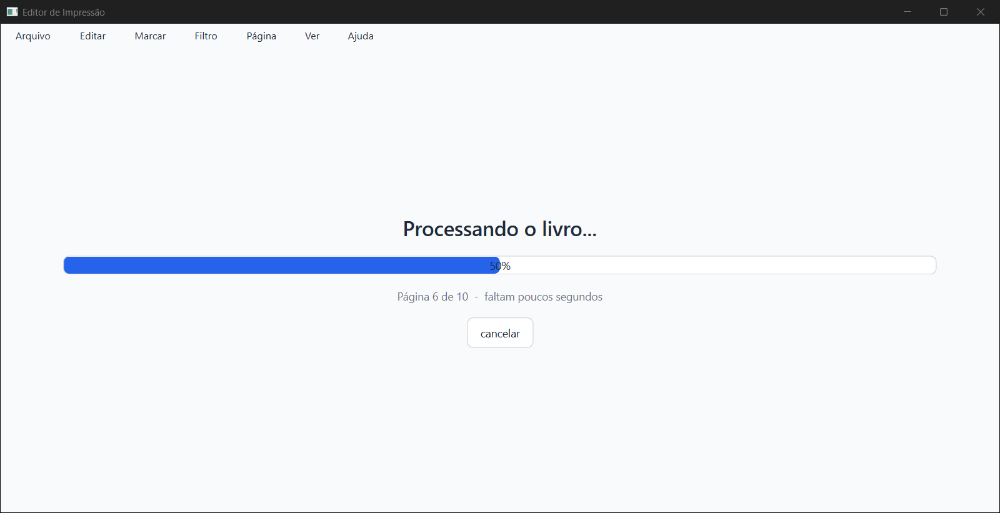

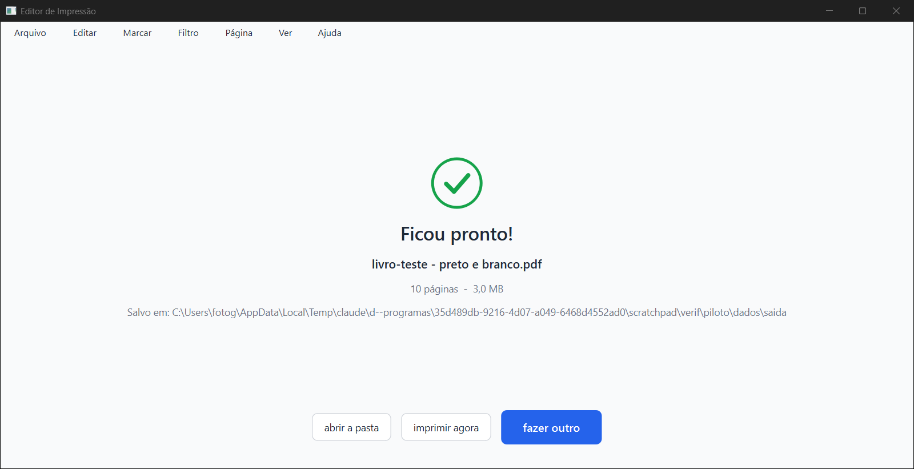
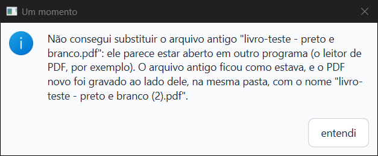
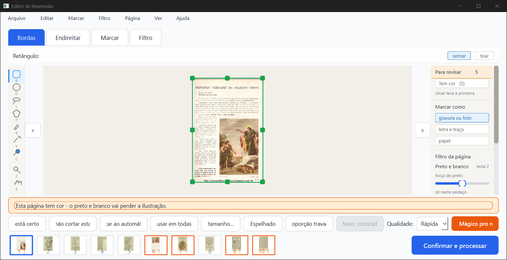
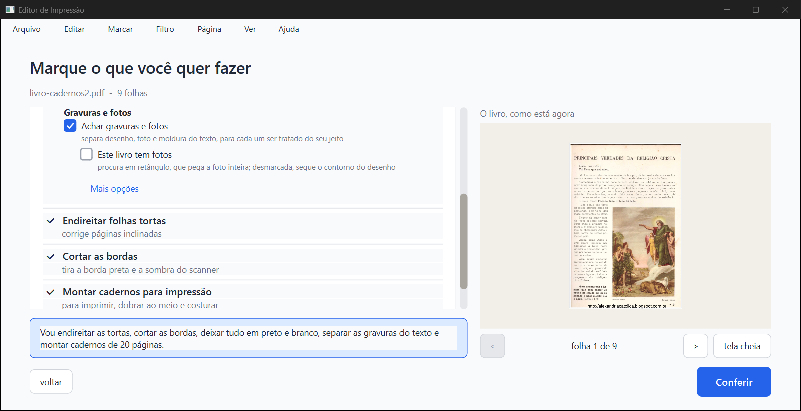
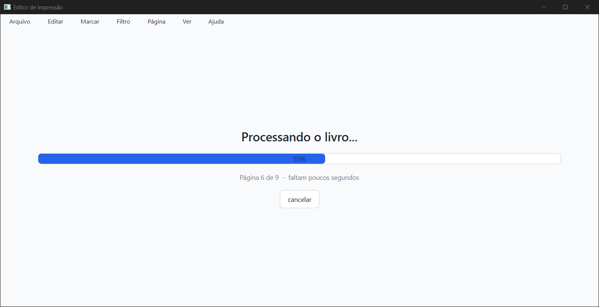
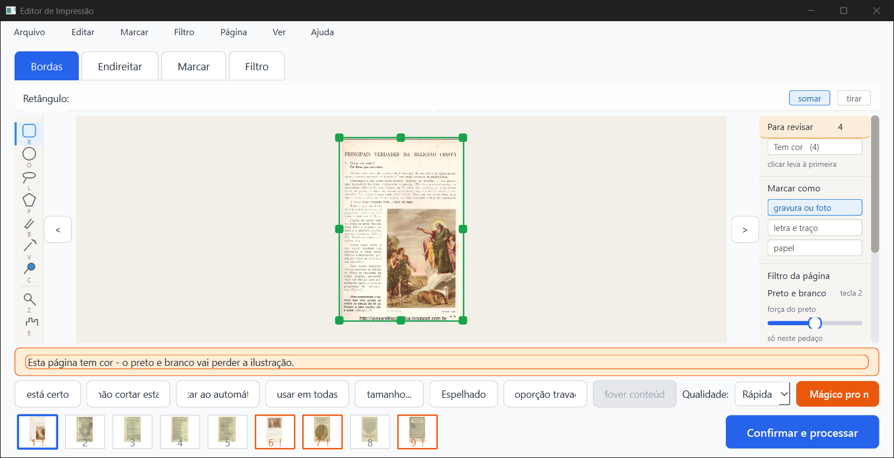
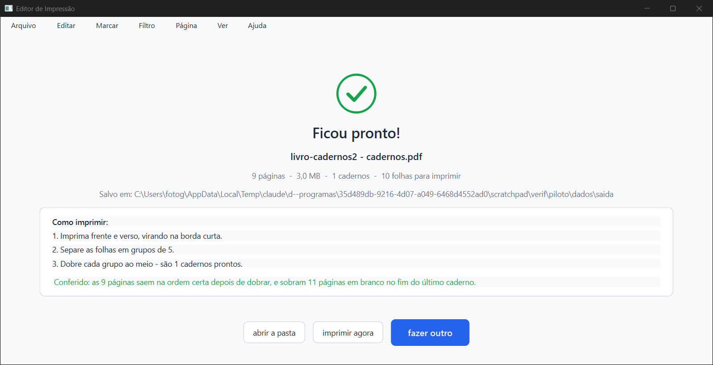
gravura / retângulo / mão / filtro original, de (0,374; 0,379) a (0,994; 0,931), praticamente o mesmo do implementador.044a7c1. As páginas 2 a 10, sem pedaço, são idênticas ao 044a7c1 (e ao PDF de antes de marcar).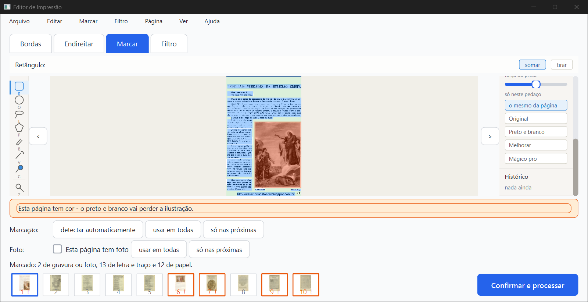
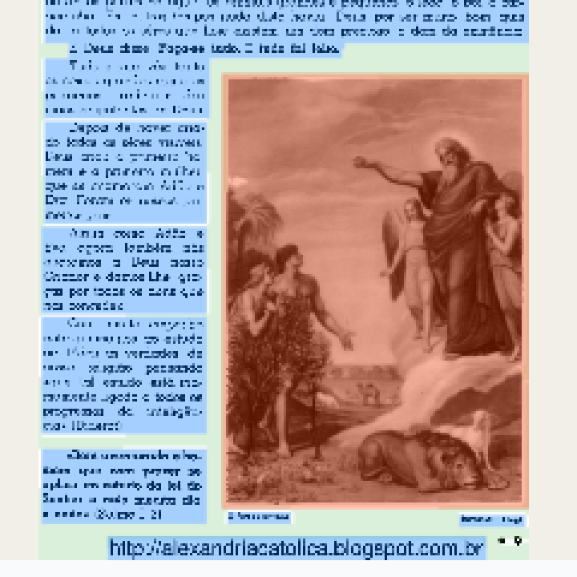
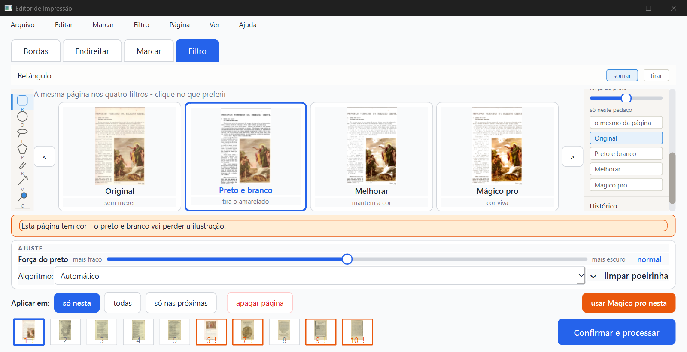
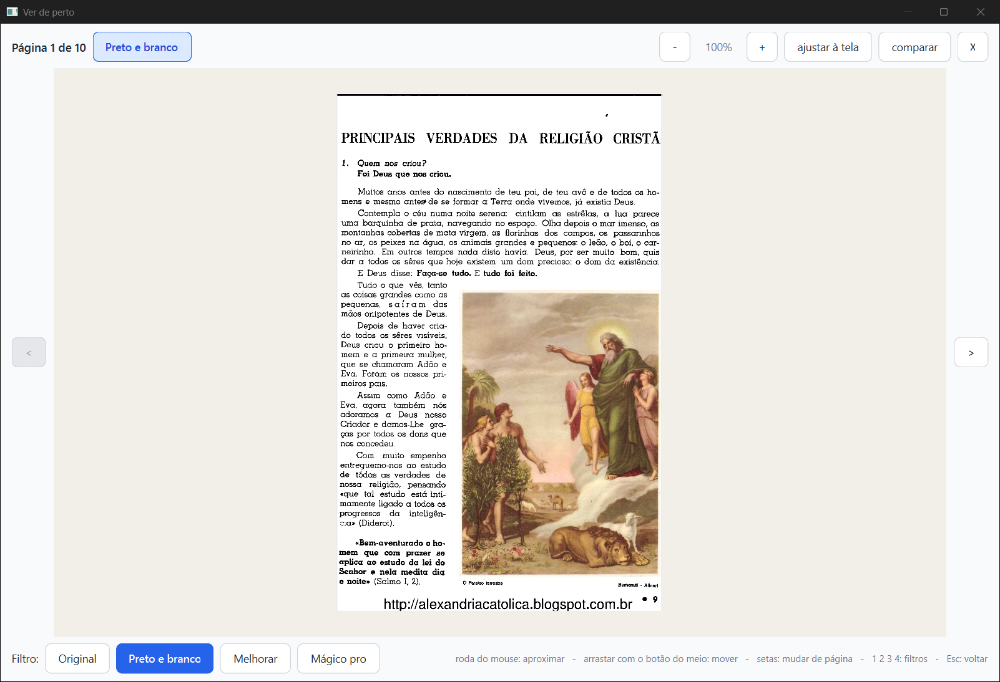
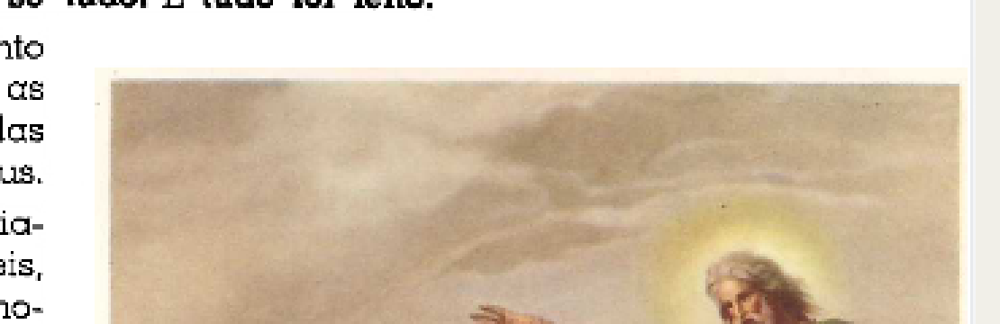
A página 1 do PDF gerado na janela: Original | 044a7c1 (o pedaço é ignorado, a pintura sai cinza) | este ramo (a pintura como no original):
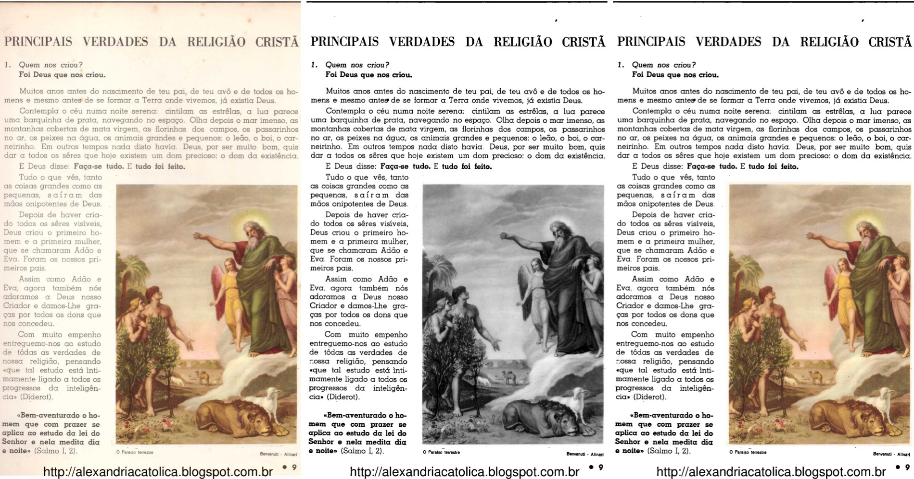
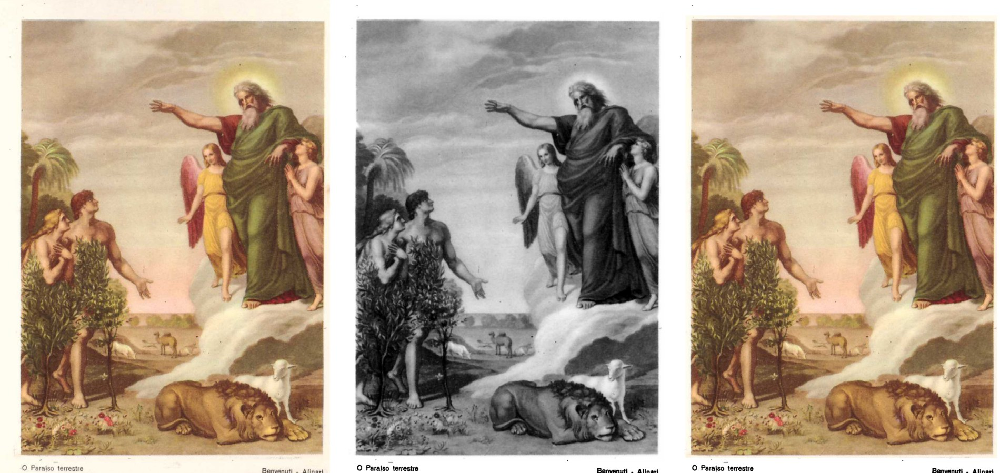
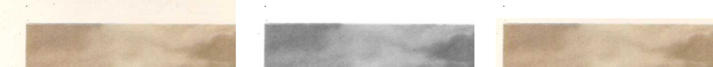
Em core/filtros.py::aplicar_filtro_com_selecao (linha 3504), o teste abaixo vem antes de qualquer olhar para o pedaço:
if filtro in (ORIGINAL, TIRAR_FUNDO):
return img, False
Então, numa página em Original, um pedaço marcado como Preto e branco, Melhorar ou Mágico pro não vale. Sai a página como veio, sem aviso. O mesmo acontece no "Tirar o fundo" (que, pela decisão de 29/09, não aceita outro filtro). E também quando "Limpar a folha" está desmarcado: core/pipeline.py, linha 940, devolve a imagem antes de chamar o filtro. Vale para a lista de bugs, como o implementador disse. Não é efeito destes commits: o teste já estava no 044a7c1.
| Imagem | O que vi |
|---|---|
escola7-pagina.jpg |
Original | antes (pintura cinza) | depois (pintura colorida, como no original; texto em preto e branco). Confere com o que eu vi na janela. |
escola7-pedaco.jpg |
A pintura de perto: o depois é igual ao original. Há uma borda creme fina em volta. |
escola7-detalhe1.jpg |
Céu e nuvens: antes cinza, com uma mancha branca recortada à esquerda; depois igual ao original, sem manchas. |
escola7-detalhe2.jpg |
Leão e pé da pintura: depois igual ao original. Embaixo aparece a faixa creme e, depois de uma linha reta, o branco da página. |
escola7-detalhe3.jpg |
Faixa creme: em cima e à direita da pintura, uma faixa creme (o papel dentro do retângulo), com o limite reto onde o retângulo termina. No original ela se confunde com a página creme; no Preto e branco, ao lado do branco, ela aparece. É pequena, mas se vê. |
opus20-pagina.jpg |
Foto de Roger Bacon: antes, manchas brancas recortadas na parede e no peito; depois igual ao original. |
opus20-pedaco.jpg |
Idem, de perto. |
opus20-detalhe1.jpg |
Rosto e peito: antes estourados de branco; depois como no original. |
opus20-detalhe2.jpg |
Parede clara e pé da foto: antes, branco recortado; depois como no original. A legenda "ROGER BACON" (fora do pedaço) sai em preto e branco. |
descartado/…-opus20-pagina.jpg |
A tentativa descartada: a parede vira manchas brancas recortadas. Descartar foi a escolha certa. |
descartado/…-escola7-pedaco.jpg |
A tentativa descartada na Escola 7: sem a faixa creme, e boa. |
Os meus prints (todos abertos, inclusive os que não entraram aqui) mostram o mesmo.
O teste oficial (teste_velocidade.py) não foi rodado, nem por mim nem pelo implementador: o PC tinha outros agentes. Só como indicação: na janela, o livro de 10 folhas foi processado em ~8 a 9 s antes e depois de marcar o pedaço. O mesmo projeto, sem janela: 13,9 s no 044a7c1 e 9,8 s neste ramo (os dois carregando os modelos, então é ruído). Nada indica lentidão nas páginas sem pedaço, que seguem o mesmo caminho e dão o mesmo resultado.
pdf_gerado ficou falso), e o destino guardado continua o nome antigo, então a próxima vez propõe o nome antigo de novo. O caso também vai para o erros.log como erro, com o rastro inteiro. Para quem consertar: o ErroPDFSalvoComOutroNome (um ErroPDF) passa pelo caminho de falha da TarefaProcessar. Talvez ele devesse chegar como sucesso, com o caminho do "(2)", e o aviso por cima. O título da caixa ("Um momento") é o de erro.PainelFiltroDaPagina._escolher_pedaco guarda a escolha mas não redesenha os botões. O Kaique pode achar que o clique não pegou. O painel Histórico também continuou "nada ainda" depois de desenhar o retângulo.montar_cadernos falso). O próprio código diz que isso é conhecido e ficou para depois. Por isso testei os cadernos com um livro novo. Em tempo: uma cópia idêntica do mesmo PDF noutra pasta é tratada como o mesmo livro (por decisão de 29/09).teste_botoes.py grava a pasta de trabalho dele em saida_teste\botoes, que nesta worktree é atalho para a pasta original. Ele só apaga e recria a própria pasta botoes\dados, como sempre faz. Não tocou em mais nada.erros.log como erro (ressalva 1, prints 12-subst-aberto-d-QMessageBox.png e 12-subst-aberto-e-depois-do-aviso.png).23-so-neste-pedaco-original.png).relatorios/conferir/so-neste-pedaco-2026-10-05/verificador/parecer-verificador-so-neste-pedaco.html (e .md, .pdf).verificador/prints/. Números: verificador/comparacao-pdfs.json. Scripts: verificador/scripts/.scratchpad\verif\piloto\dados\saida e piloto\comparar).Editor de Impressão · gerado em 05/10/2026 às 16:29